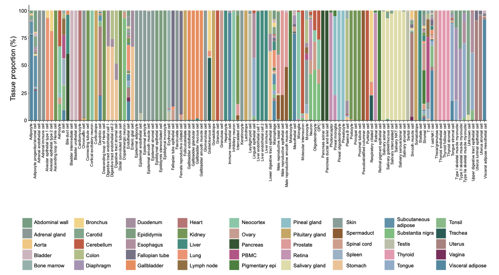

NHPCA: Monkey Atlas
- NHPCA interactive annotation category에서 Tissue 별 Cell type markers 확인
- Supple Figure 8. → Selected markers for monkey cell cluster annotations
- Supple Table 1e → Individual cluster markers 중 PBMC

In the kidney, LGR5+ cells were mostly enriched in the distal convoluted tubule (DCT) and, to a less extent, in the descending and ascending loop of Henle(Fig.3a)
In line with expectations, we also observed enrichment of immunological-related traits (‘lymphocyte count’, ‘monocyte count’ and traits related to immune disorders) in myeloid cells and B and T lymphocytes.
Lymphocyte 림프구
- 장기 이식으로 Pig kidney를 Monkey에 이식했을 때 면역반응을 일으킬 때 Lymphocyte가 많이 나타날 수 있다.
- 분류 :
- T cell → CD 4+ T, CD 8+ T, NKT
- Naive T cell(미접촉 T 세포) : 말초에서 아직 항원을 만나지 못한 T 세포
- helper T cell(보조 T 세포) : T세포 중 다른 백혈구들의 분화 및 활성화 조절 → 체액성 면역 촉진
- Killer T cell(자연 살해 T세포) : Helper T cell 및 Killer T cell에 비해 적게 나타남
- Memory T cell(기억 T세포) : 항원을 인지한 T cell이 생존하고 있다가 항원 재침입 시 빠르게 활성화되어 효과 T cell의 기능을 할 수 있음
- Suppressor(Regulatory) T cell(조절 T세포): 면역 반응이 끝날 때까지 T세포의 세포 매개 면역을 차단?
- B cell : Lymphocyte 중 항체를 생산하는 세포 → 항원에 대항해 항체를 만들어냄
- Plasma B cell : B cell이 항원 자극에 의해 활성화되어 분화된 세포
- NK(Natural Killer cell) : 선천 면역을 담당하여 바이러스 감염세포나 종양 세포를 공격
- Dendritic cell(수지상세포)
: 항원을 인식하고 처리하여 T 세포에 제시하는 주요 항원제시세포(APC)로 기능
- pDC : 바이러스 감염에 대한 초기 면역 반응 → 타입 I 인터페론(IFN-α, IFN-β)을 생산
- cDC(DC) : 항원 포획과 제시
- Monocytes : 혈액에 존재하는 큰 백혈구로, 세포 잔해, 병원체, 외부 물질을 포식하고 소화
- Macrophage : 조직에 존재하는 큰 백혈구로, 세포 잔해, 병원체, 외부 물질을 포식하고 소화
- Neutrophil : 백혈구의 일종으로, 감염과 싸우는 데 도움을 주며, 병원체를 섭취하여 제거
- NKT cells :T 세포와 NK 세포의 특징을 모두 가짐
- T cell → CD 4+ T, CD 8+ T, NKT
| B cells | MS4A1,CD79B,CD74,LGMN,SPINT2,BANK1 |
| Plasma B cell | JCHAIN,MZB1,TNFRSF17,SSR4 |
| Natural Killer Cells | GZMK,NKG7,GNLY,CCL5 |
| Natural Killer T Cells | KLRB1,GZMB,NKG7,CD3D,GZMK,GZMB |
| Dendritic cells(cDC) | PTPN22, CD247,IRF8 |
| Monocytes | CST3,LYZ,MNDA,CTSS |
| Macrophages | MRC1,CD163,CPA3 |
| Neutrophil | S100A09 |
immune.genes = list(
B.cells = c('MS4A1', 'CD79B', 'CD74', 'LGMN', 'SPINT2', 'BANK1'),
Plasma.cell = c('JCHAIN', 'MZB1', 'TNFRSF17', 'SSR4'),
NK.cells = c('GZMK', 'NKG7', 'GNLY', 'CCL5'),
NKT.cells = c('KLRB1', 'GZMB', 'NKG7', 'CD3D', 'GZMK'),
Dendritic.cells = c('PTPN22', 'CD247', 'IRF8'),
Monocytes = c('CST3', 'LYZ', 'MNDA', 'CTSS'),
Macro = c('MRC1', 'CD163', 'CPA3'),
Neutrophil = c('S100A9', 'SRM')
)original
immune.genes = list(B.cells=c('MS4A1', 'CD74', 'LGMN', 'SPINT2'),
Plasma.cell=c('JCHAIN'),
NK.cells=c('NKG7', 'KLRB'),
NKT.cells=c('CD3D', 'GZMK', 'GZMB'),
Dendritic.cells=c('IRF8'),
Monocytes=c('LYZ','CTSS'),
Macro=c('CPA3'),
Neutrophil=c('S100A9'))
FeaturePlot(sc.rna, features=paste0(m.suffix,unlist(immune.genes)))
FeaturePlot(sc.rna, features=paste0(m.suffix,c('CD74','LGMN','GZMB')))